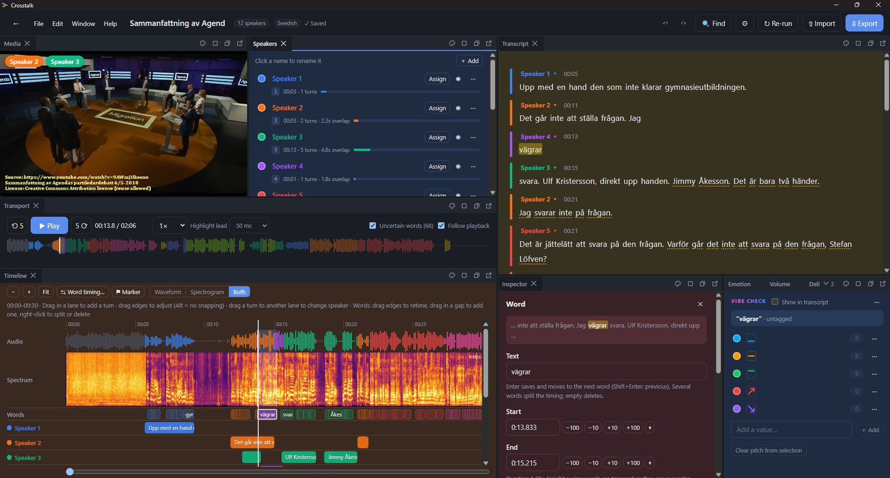

← Four kinds of careful work
Crosstalk: A Tool for Reviewing Who Speaks When
When two people talk over each other, transcripts and speaker labels are where reviewers disagree most. Crosstalk is my own desktop app for exactly that moment: seeing every speaker turn on one timeline, so overlaps and handovers get checked instead of guessed.
The problem it looks at
Speaker A
Speaker B
A first look

Video: “Sammanfattning av Agendas partiledardebatt 6/5-2018” by Lu (@LuddeThl) on YouTube, licensed CC BY.
What the case study will show
- The review problemWhere speaker labels and turn boundaries go wrong, drawn from my work reviewing and auditing audio annotation.
- The tool, screen by screenA short recording of Crosstalk in use on openly licensed audio, with a walk-through of each panel.
- The design decisionsWhat I chose to build first, what I left out, and why a reviewer would care.
- How I built itPlanning and specifying the app myself, and building it with AI coding assistance.
Want an early look before the case study is published? I’m happy to walk you through the current version.
Ask for a preview